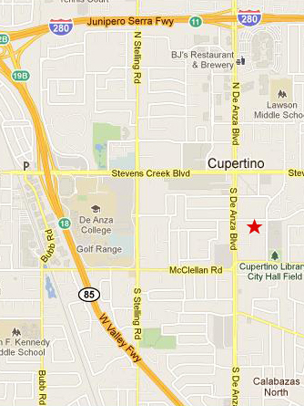

FOURSQUARE PARTNERS
four-square \-'skwa(ə)r\ adj. (14c): marked by boldness and conviction: FORTHRIGHT
"If I have been able to see further,
it was only because I stood on the shoulders of giants.
"
- Sir Isaac Newton (1643 - 1727)
 FOURSQUARE PARTNERS
20370 Town Center Lane, 1st Floor, Suite 120
Cupertino, California 95014
Eric Sharps
eric@foursquarepartners.com
pdf directions
From the San Francisco Airport, take Highway 380 West to 280 South. Please follow the directions from 280, below.
From the East Bay, take the San Mateo Bridge and stay on Route 92 West to Highway 280 South. From the Dumbarton Bridge, take 101 South to 85 South to 280 South. Please follow the directions from 280, below.
From the San Jose Airport, take 880 South to 280 North. Please follow the directions from 280, below.
From Interstate 280 in either direction, take the De Anza Boulevard exit SOUTH for just under a mile. After passing Stevens Creek Boulevard, take the first left which is Rodrigues Avenue. Turn into our parking lot at the third right, past Building 20380. Our building, 20370, is on the right. Park anywhere. We are on the first floor.investment (financial or strategic) please contact us at eric@foursquarepartners.com